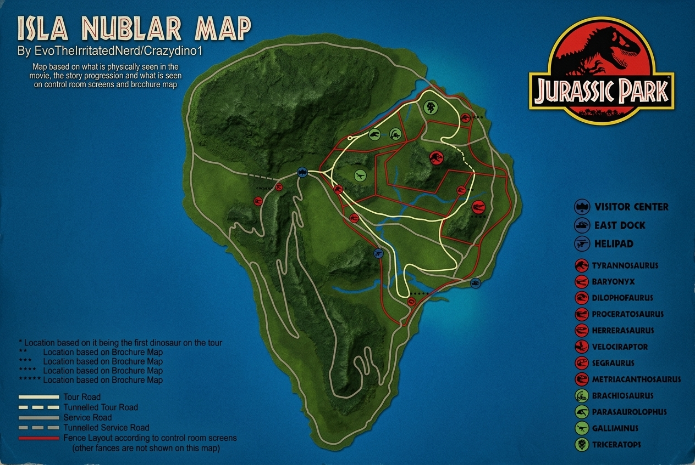

BEM-VINDO À ILHA
Onde a História
Ganha Vida
Descubra um mundo perdido há 65 milhões de anos, recriado com a mais avançada tecnologia da InGen.
Localização do Parque

Mapa interpretativo da Ilha Nublar. O parque está localizado na costa da Costa Rica, a 120 km do continente.
ISLA NUBLAR · COSTA RICA
Bem-vindo ao
Jurassic Park.
O único parque do mundo onde dinossauros vivos caminham entre visitantes. Uma experiência criada pela InGen com a mais avançada engenharia genética do planeta.
15
Espécies clonadas pela InGen
238
Animais no inventário inicial
1
Fonte literária: Michael Crichton